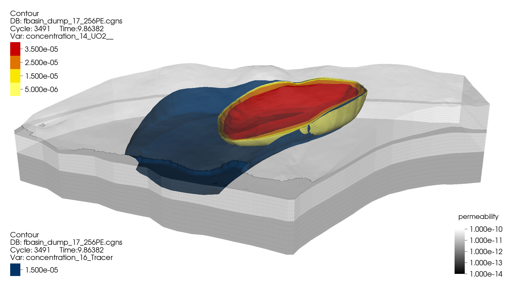
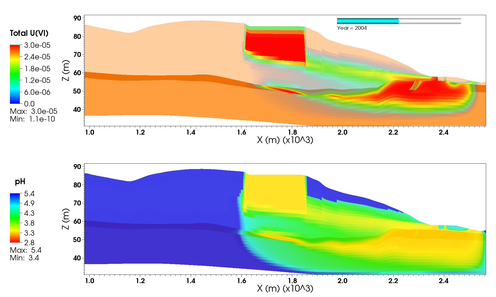
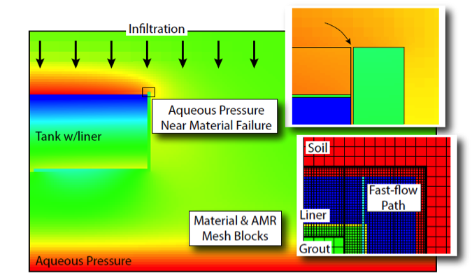

Introduction¶
The Advanced Simulation Capability for Environmental Management (ASCEM) program is developing a suite of open-source tools and state-of-the-art approach for integrating data and scientific understanding to enable prediction of contaminant fate and transport in natural and engineered systems. This multi-lab program is supported by the Department of Energy (DOE) Office of Environmental Management (EM) to provide scientifically defensible and standardized assessments of the uncertainties and risks associated with the environmental cleanup and closure of its waste sites.
  {kind=link}
{kind=link}
{kind=link}
The ASCEM Platform, Akuna, supports and streamlines the process of creating ensembles of conceptual models to quantify the associated uncertainty, sensitivity, and risk in these systems. These conceptual models will span a range of process complexity, potentially coupling hydrological, biogeochemical, and geomechanical processes. Amanzi, is the flexible and extensible computational engine that simulates the coupled process and flow scenarios described by these conceptual models. Amanzi, is a parallel flow and reactive transport simulator that supports transient and steady-state saturated and unsaturated flows, and wide variety of geochemical reactions.
Quality Assurance: Basic Phase Release¶
The development of Amanzi is following a risk-based graded approach to meet its Quality Assurance requirements (NQA-1). This graded approach will use three phases of development in conjunction with an agile test-driven approach to maturing capabilities through a series of site-based demonstrations and automated hierarchical testing. Specifically, the Research and Development branch (R&D) corresponds to the NQA-1 “Basic Phase”, while the “Community Code” phase requires additional rigor in support of the NQA-1 “Applied Research” and broader use in the community. Finally, application of appropriate QA rigor will support the “Development Phase” and release of ASCEM as a tool for regulatory work, which is targeted for late 2015.
To ensure that new advances in algorithms, geoscience, computer, and computational science can advance quickly to future regulatory releases, all three phases of development will co-exist in the future. However, at this early stage only the R&D code branch (Basic Phase) exists. This release of Amanzi is from the R&D branch and is intended to open communication and build collaborations with potential users at DOE waste sites, universities and industry.
Release Schedule¶
The current version of Amanzi is 0.86-dev
Older Versions¶
- Not Yet
Future Releases¶
- Updates to the Basic Phase Amanzi, including bug fixes and capability enhancements, will be made regularly
- First Applied Phase release of Amanzi (~version 0.90.0) is targeted for late 2014.
- First Development Phase (NQA-1) release of Amanzi (~version 1.0) is targeted for late 2015.
System Requirements:¶
Amanzi is written in C++,C, and Fortran, and is readily built on modern Linux/Unix systems, including Ubuntu, RedHat Enterprise, and CentOS, as well as Mac OSX. There are a large number of Third Party Libraries that it uses, so to make the build process easier Amanzi’s build system will download and build all the TPLs for you. To get started you will need a modern Linux/Unix/OSX system with
- CMake (version >= 2.8.8),
- GNU compilers (gcc,g++,gfortran) version >= 4.7
- MPI (e.g., OpenMPI version > 1.4)
Details are provided in the Installation Instructions in the User Guide.
Open Source¶
Amanzi is developed and distributed under the three-clause BSD open-source license. Copyright is held jointly by the contributing laboratories (LANL,LBNL,PNNL). Included in the Amanzi source code is the growing set of unit, integration, regression, and benchmark tests that are used by the development and application teams.